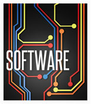
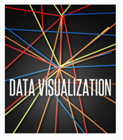
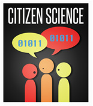
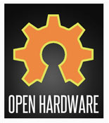
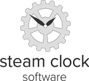

DO IT FOR SCIENCE!
April 21st - 22nd @ The Network Hub, Vancouver BC




Love hacking and love science? NASA wants YOU to come help us bring scientific tools to a wider audience in your community.
Programmers and designers of all skill levels are invited to participate in the Vancouver NASA Space Apps Challenge codeathon. Spend the day with other fellow geeks building something great, and lunch is on us. And did we mention prizes?
Vancouver Challenges & Prizes
The Vancouver node of the Space Apps Challenge will be emphasizing three of the many challenges suggested by NASA. Participants are welcome to compete in any of the challenges, but in order to keep things cohesive we decided to focus on three that we felt the Vancouver teams could really knock out of the park.
All solutions built at the event must be submitted under a license that permits the free and open dissemination of the work. The day of, we'll have details on how to host your project with us on Github.
The Vancouver location will be giving out special prizes for the challenge categories listed below.
Open Data Challenge - Kepler
The challenge is to help NASA either a) make Kepler data more accessible or b) create something amazing with it. It could be an app that better visualizes the data, an interface that presents the data in a new way, an infographic that helps understand the data in a new way, or more.
The centuries-old quest for other worlds like our Earth has been rejuvenated by the intense excitement and popular interest surrounding the discovery of hundreds of planets orbiting other stars. There is now clear evidence for substantial numbers of three types of exoplanets: gas giants, hot-super-Earths in short period orbits, and ice giants. The following websites are tracking the day-by-day increase in new discoveries and are providing information on the characteristics of the planets as well as those of the stars they orbit: The Extrasolar Planets Encyclopedia, NASA Exoplanet Archive, New Worlds Atlas, and Current Planet Count Widget. The challenge now is to find terrestrial planets (i.e., those one half to twice the size of the Earth), especially those in the habitable zone of their stars where liquid water and possibly life might exist. The Kepler Mission, NASA Discovery mission #10, is specifically designed to survey a portion of our region of the Milky Way galaxy to discover dozens of Earth-size planets in or near the habitable zone and determine how many of the billions of stars in our galaxy have such planets. Data from this mission will allow us to place our solar system within the continuum of planetary systems in the Galaxy.
Unfortunately Dense Instructions on How to Download Data(We highly advise you to acquire the data BEFORE the event)
NASA Planetary Data System Interface
Develop a tool for citizen scientists, educators, and students to access NASA’s Planetary Data System data sets, which is available at http://pds.nasa.gov/. Tools for viewing and working with this data are found here.
HTML5 App to access NASA Earth Observations website
Develop a stand-alone HTLM5 tablet app that would reach a large number of citizen scientists using Earth Science Data from the NASA Earth Observations (NEO) website (http://neo.sci.gsfc.nasa.gov). The website currently provides access to a wide array of missions and instrument data, and the ability to statistically analyze the information. It is focused on Earth Science, but will be extended to include planetary systems datasets in the future. NASA is currently building an app called “Science on a Sphere SOS” that allows the user to use the capabilities of the NEO website. NASA is look for help extending the analysis and animation capability in the NEO on SOS app. To complete the continuum from website to SOS, a stand-alone HTLM5 tablet app would reach a large number of citizen scientists. The current work is close to being able to run as a web-app on a tablet.
Best Cross-platform App
This is a special challenge for all apps that are entered at the Vancouver location. With next-generation devices emerging in a variety of screen sizes and running many different operating systems, the issue of cross-platform compatibility is a crucial consideration in app development. To be eligible for this category, demo your final app to us on (3) or more devices (your laptop can count as one, and at the event we're sure to have a variety of mobiles and tablets) and show us it looks great. Responsive design, Cordova (PhoneGap), and SproutCore are a few examples of where your cleverness could be well spent for this category.
FAQ
Please review the FAQ on the flagship site.
Q. How much does it cost to enter?
A. This event is free. Spots are limited to 50 participants at the Vancouver location. That's all we can fit, so sign up before all the spots are gone. We'll also be providing some healthy lunch from Vancouver's best local fare. No pizza.
Q. Can I work in a team?
A. We strongly encourage you to work in a team. If possible, form your team with your friends in advance. Take some time to look at the challenge you'll be working on and form a plan. Don't have anyone to form a team with yet? No problem. Vancouver developers are friendly and you'll be able to find a team to join on the morning of April 21st.
Q. Can I work by myself?
A. Absolutely. Although we encourage team effort, we're not going to get in your way about how you want to work on the challenge. Working by yourself is cool too.
Q. I'm a designer. Can I participate too?
A. Part of the success of these apps is going to depend on making them usable and appealing. We need your input on user experience, interaction design, and some wonderful graphics to make these apps reach a wide audience. Bring your mad Photoshop skills and front-end development chops to the hackathon, we need you!
Location - The Network Hub
170 & 300 - 422 Richards Street
Vancouver, BC
V6B 2Z4
Website
View Larger Map
Schedule
April 21st, 2012
9:00 a.m. Arrive at The Network Hub & meet fellow participants
9:30 a.m. Form teams, set up working environment, get comfy
10:00 a.m. Experts talk about the subject material & data
10:30 a.m. Hack away!
12:30 p.m. Delicious lunch catered by TBA (Sponsored by Steam Clock Software)
5:30 p.m. Pack up things, group check-in and wrap-up
6:00 p.m. See you tomorrow morning! We'll point you in the direction of local 24-hour coffee shops if you want to keep on coding.
April 22nd, 2012
10:00 a.m. Arrive at The Network Hub & drink some coffee. Keep on keepin' on.
12:30 p.m. Delicious lunch catered by TBA (Sponsored by SFU Computing Science and the Faculty of Applied Sciences)
5:30 p.m. Ding! Time's up. Wrap up what you have and prep yourselves to demo your app.
6:00 p.m.Groups present their apps to somewhat raucous applause, and judges take notes.
7:00 p.m. Judges decide on winners and prizes are distributed. Woohoo!
Sponsorship
The NASA Space Apps Challenge is free to all participants and depends on community support to succeed. We're doing this because solely because it's cool way to make a difference and an obvious opportunity to show off Vancouver's developer innovation.
Sponsor some snacks and prizes to make it a hackathon that developers won't forget.
Sponsors:
Faculty of Applied Sciences and Computing Science
Contact
Download a press kit here.
Lead Organizer: Angelina Fabbro (angelina@steamclocksw.com)
Physics Subject Matter Expert, CERN: (william.joseph.mills@cern.ch)
Step-by-step instructions for getting at the Kepler data:
0 / DO THIS NOW
There's a bunch of (easy) overhead to deal with before getting at the Kepler data, but it takes a few minutes. This tutorial is about 30 minutes long; once you work through it, you will know how to search and prep the Kepler data (including extracting it from the special astronomy-preferred format it comes packaged in, if this is important to you), which you may want to have all done before the Space Apps Challenge weekend, so you can focus on the challenge!
1 / Registering
In order to access Kepler data, NASA wants you to register with its site. Go to the registration page and fill it out. A user and pass will be emailed to you immediately.
2 / Searching for Kepler data
A giant query form is available here. You can play around with fields later, but for now just hit the green highlighted 'search' button.
3 / Looking at the search results
A table of search returns will be presented with a ton of information in it; all the column headings are explained here. but don't worry about most of them now. The only two you care about on your first pass are:
Mark (very leftmost): if an entry is highlighted yellow in this column, the Kepler team hasn't released the dataset to the public; ignore these.
Condition Flag (very rightmost): If not blank, will have a human-readable comment on anything interesting in the data run.
Look for any data run with Condition Flag = 'Planetary candidate', and check its box in the 'Mark' column. Now hit the 'Plot Marked Light Curves' button at the top of the page. A plot of the selected data run will be displayed; time is on the horizontal axis, and the amount of light observed from the star is displayed vertically. The 'Planetary candidate' ones should show a bunch of downward-pointing spikes on their light curves; these mark when a planet passed in front of the star and blocked some of its light - that's how the Kepler experiment identifies the presence of a new planet!
4 / Retrieve Kepler Data
Go back to the search results of the previous step, and hit the 'Submit marked data for retrieval from STDADS' button at the top. You'll be shown a list of all the files that will be packaged for your retrieval; hit the 'Submit marked data for retrieval from STDADS' on this page as well, and you'll be taken to a page that asks you how you want your data served to you; you'll probably want it either sent to your ftp server, or staged on their ftp server for you to grab. Notice the 'Compress the files using gzip' option in the same dialogue, enter your user and pass you got from step 1 at the top, and hit the 'Send retrieval request to ST-DADS' button. If all is well, you'll be sent to a page titled 'Request Sent to Kepler DADS'.
Wait a minute, and then check the email you gave NASA when you registered. You will receive two emails: the first acknowledges that your request is pending, and the second will contain the line 'REQUEST DELIVERY STATUS: SUCCESS' if all completed successfully. If you chose to have the files staged on their ftp server, you can pull the results to your local computer with your ftp client of choice, following the path indicated in the email that told you all was well.
5 / Reading Kepler Data
The astronomy community has adopted an industry standard file format for visualizing and archiving their data, .FITS. You'll need to get a viewer to read these; there's a list here; fv works with no problems in OS X 10.5.8, available for free here.
6 / fv
After downloading fv, unzip the Kepler data you got in step 4 if you haven't already, and navigate to it via the dialogue that pops up when you open fv. Open up any *llc.fits file and then from the new dialogue that pops up:
1. Click on the 'index' box with extension 'LIGHTCURVE'
2. Hit the 'Hist' button to the right in the same row
3. In the window that pops up, choose 'TIMECORR' from the dropdown labeled 'X' and 'SAP_FLUX' from the dropdown labeled 'Y'. Hit the 'Make' button at the bottom and a histogram of the data appears similar to the one you saw on the website.
4. Close the plot window, as well as the other one that popped up with it and the one with the 'X' and 'Y' columns in it. In the window where you first checked the 'LIGHTCURVE' box, hit the 'All' button in the same row.
5. A new window appears with all the data in table form. Click on 'File..Save' and follow the instructions to make a human-readable .txt dump of all the information in the file; this may be useful for escaping from the .FITS format (if you so choose) and doing your own thing with the data!
Questions about these instructions? Feedback? Contact Bill Mills.